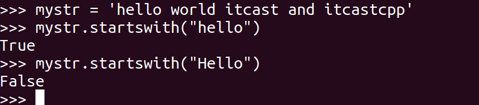
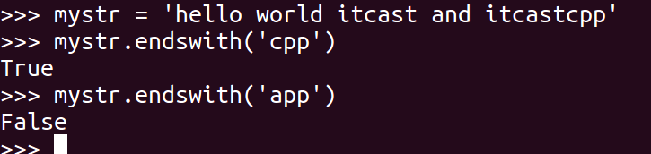
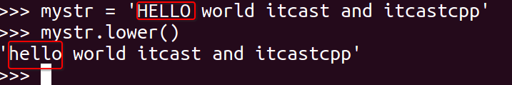
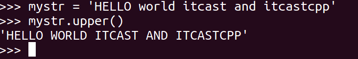
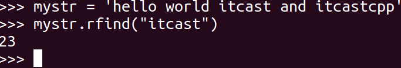
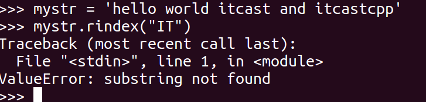
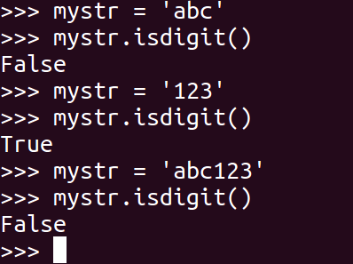

字符串常用操作(课外阅读)
如有字符串mystr = 'hello world itcast and itcastcpp'，以下是常见的操作
1. capitalize
把字符串的第一个字符大写
mystr.capitalize()

2. title
把字符串的每个单词首字母大写
>>> a = "hello itcast"
>>> a.title()
'Hello Itcast'
3. startswith
检查字符串是否是以 hello 开头, 是则返回 True，否则返回 False
mystr.startswith(hello)

4. endswith
检查字符串是否以obj结束，如果是返回True,否则返回 False.
mystr.endswith(obj)

5. lower
转换 mystr 中所有大写字符为小写
mystr.lower()

6. upper
转换 mystr 中的小写字母为大写
mystr.upper()

7. lstrip
删除 mystr 左边的空白字符
mystr.lstrip()

8. rstrip
删除 mystr 字符串末尾的空白字符
mystr.rstrip()

9. strip
删除mystr字符串两端的空白字符
>>> a = "\n\t itcast \t\n"
>>> a.strip()
'itcast'
10. rfind
类似于 find()函数，不过是从右边开始查找.
mystr.rfind(str, start=0,end=len(mystr) )

11. rindex
类似于 index()，不过是从右边开始.
mystr.rindex( str, start=0,end=len(mystr))

12. partition
把mystr以str分割成三部分,str前，str和str后
mystr.partition(str)

13. rpartition
类似于 partition()函数,不过是从右边开始.
mystr.rpartition(str)

14. splitlines
按照行分隔，返回一个包含各行作为元素的列表
mystr.splitlines()

15. isalpha
如果 mystr 所有字符都是字母 则返回 True,否则返回 False
mystr.isalpha()

16. isdigit
如果 mystr 只包含数字则返回 True 否则返回 False.
mystr.isdigit()

17. isalnum
如果 mystr 所有字符都是字母或数字则返回 True,否则返回 False
mystr.isalnum()

18. isspace
如果 mystr 中只包含空格，则返回 True，否则返回 False.
mystr.isspace()